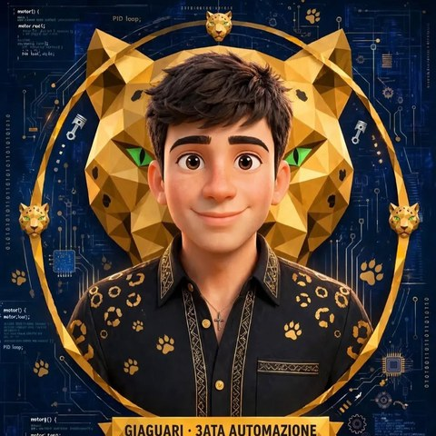
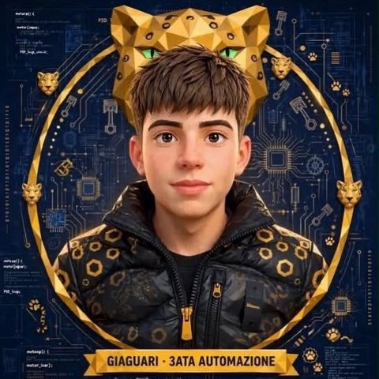
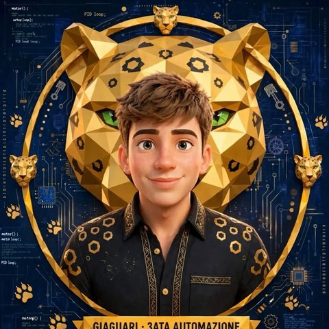

Classe 3ATA · Automazione · ITI "G. Bosco Lucarelli"
«Prova cambio motto.»
Le nostre esercitazioniSiamo la squadriglia Giaguari della 3ATA, corso di Automazione. Come il giaguaro, che unisce forza, precisione e scatto, vogliamo fare squadra: ognuno porta le proprie competenze, dal codice alla grafica, e le mette al servizio dei lavori di tutti.
I nostri avatar, dorati su sfondo di circuiti, raccontano proprio questo: la natura del felino e il mondo dell'elettronica insieme.
Ognuno ha un ruolo e il suo avatar.

Capo squadriglia
Punto di riferimento e leader del gruppo: coordina i compagni, tiene alta la coesione e organizza i lavori. Prende le decisioni nei momenti chiave e guida la squadra con carisma, responsabilità ed etica.

Il programmatore
La mente tecnologica della squadra: sistema la logica dei programmi e fa dialogare i componenti. Ha una pazienza infinita con il punto e virgola mancante e non si arrende finché il sistema non funziona.

Designer e specialista della grafica
La mente creativa e visiva: cura l'aspetto dei lavori, la presentazione e le interfacce, unendo l'automazione a un design pulito, moderno e curato in ogni dettaglio.
Un lavoro dopo l'altro: qui trovate tutto quello che abbiamo consegnato.
Una voce per ogni lezione.
Abbiamo creato i nostri avatar e consegnato la relazione di presentazione del team, con il ruolo di ognuno.
Abbiamo creato la carta intestata e il modello di relazione tecnica.